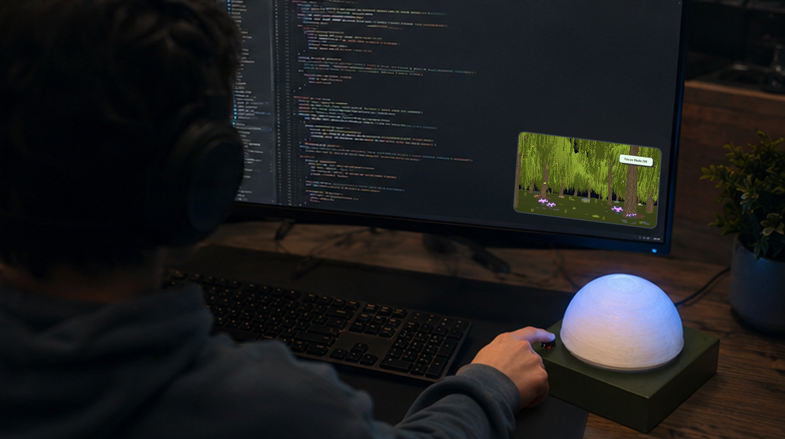
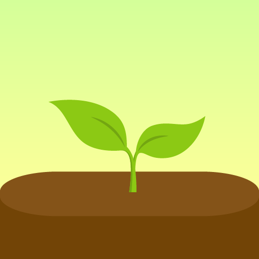
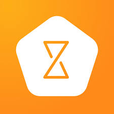
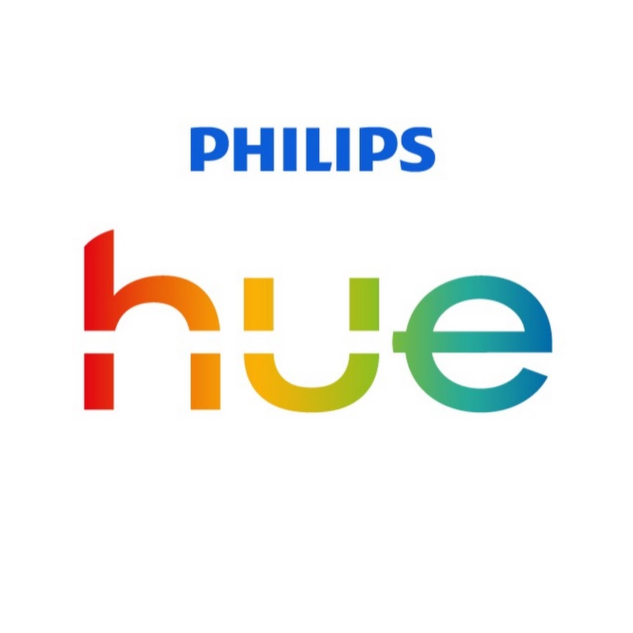
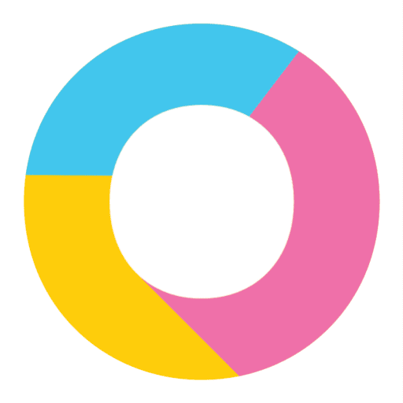
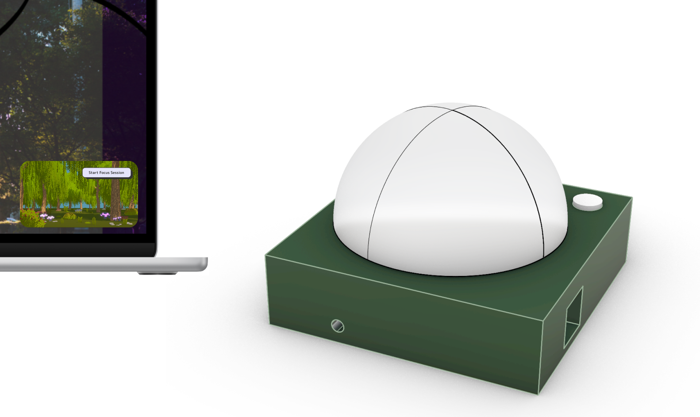

Physical computing · Ambient interaction · Product systems
TerraSync.
A responsive desk lamp that connects ambient light, intentional focus, and a digital terrarium so progress feels like something users can quietly grow.

Rhino · C#
01 · The opportunity
Focus tools often create the same attention cost they promise to reduce.
Timers, dashboards, and alerts keep productivity visible, but they can also become another interruption. The opportunity was to keep progress visible without asking for constant attention.
Tools feel loud
Countdowns, alerts, and streak warnings introduce urgency into an activity that needs calm.
Progress feels abstract
Minutes and metrics record effort, but they do not always make momentum emotionally legible.
The room is ignored
Most digital tools treat focus as something that happens on a screen, separate from the physical workspace.
How might a focus tool stay at the edge of attention while making progress feel alive, tangible, and connected to the room?
02 · Research and framing
Calmness and meaningful progress became two separate research questions.
The three week timeline limited formal research. Quick discovery shaped a few early questions, followed by a survey exploring the two most promising themes.
Fast, directional discovery
Notes from focused work sessions, quick peer conversations, and a scan of productivity and ambient lighting products guided the early direction.
ObserveNoted moments when checking a timer or notification broke concentration.
ListenAsked peers what made focus tools feel motivating versus judgmental.
CompareMapped how existing products handle progress, physicality, and peripheral feedback.
Two tensions shaped the concept
Low interruption ≠ low feedback
People still need to know that the system is working, but not through constant prompts.
Measured time ≠ felt progress
Elapsed minutes are precise, yet a growing visual can make effort feel more concrete.
Next survey
Conducted, not yet analyzed
During a focus session, which feedback would help you notice progress without pulling your attention away?
Select the two forms of feedback that would feel most supportive.
Tests “tools are too loud”
Compares peripheral feedback against interruptive audio and notifications.
Tests “progress feels abstract”
Compares visual growth against numeric tracking as a representation of momentum.
Competitive analysis
Existing products solve pieces of the problem, but not the full relationship.
Forest makes focus grow visually. TIMEFLIP2 makes tracking physical. Philips Hue makes light adaptive. Luxafor makes work status peripheral. TerraSync combines those strengths around one quieter behavior.
Opportunity space
Ambient adaptation + tangible progress + a deliberate physical interaction.

Forest
Turns focus sessions into growing digital trees and a forest that builds over time.
Gap: progress feels meaningful, but the reward still lives on a screen.
Official product ↗

TIMEFLIP2
Uses a physical object and simple gestures to start, pause, and sort tracked time.
Gap: the interaction is tangible, but progress is reviewed after the session.
Official product ↗

Philips Hue
Creates responsive lighting scenes, routines, and a connected lighting ecosystem.
Gap: the room adapts, but the light does not show focus progress.
Official product ↗

Luxafor
Uses a small status light to show availability and reduce workplace interruptions.
Gap: the light protects focus from others, but does not make personal progress visible.
Official product ↗
| Product | Peripheral feedback | Tangible control | Visible progress | Environmental response |
|---|---|---|---|---|
| Forest | ~ | × | ✓ | × |
| TIMEFLIP2 | ~ | ✓ | ~ | × |
| Philips Hue | ✓ | ~ | × | ✓ |
| Luxafor | ✓ | ~ | × | × |
| TerraSync | ✓ | ✓ | ✓ | ✓ |
03 · Design direction
The solution needed to be understandable without becoming insistent.
Three principles connected the research tensions and market gap to the physical form, digital terrarium, and interaction model.
01
Live at the edge of attention
Use light and slow environmental change instead of alerts, streak warnings, or a dominant countdown.
Answers “tools feel loud”
02
Turn time into visible growth
Represent sustained focus through a living terrarium so momentum can be understood at a glance.
Answers “progress feels abstract”
03
Make interruption intentional
Use a confirmation step before pausing so a momentary impulse does not instantly end a session.
Makes returning to focus easier
The photoresistor reads ambient light.
The lamp and terrarium shift together.
Focused time becomes visible plant growth.
Pause confirmation keeps interruption deliberate.
04 · Build process
Technical risk came before refining the product form.
The build moved from isolated component tests to a synchronized system, then into a physical enclosure shaped by stability, diffusion, and usability.

Prototype 01
Verify each input independently
The photoresistor, LEDs, and push button were tested on a breadboard before connecting the system to Unity. This kept sensor debugging separate from the experience logic.

Prototype 02
Connect the physical and digital feedback
Arduino sends sensor data over serial communication while a C# script maps those values to Unity. Once the loop was stable, plant growth, pause states, and day and night changes were added.
Moved the button to the top
A side press caused the lightweight enclosure to slide. A downward press made the interaction more stable.
Changed the dome to white
The translucent surface concealed wiring and softened the individual LEDs into one ambient glow.
Separated the LED colors
White, yellow, and blue LEDs produced a calmer result than a single exposed RGB source.
Circuit schematics, resistor calculations, and the bill of materials are documented on the technical project page.
05 · System behavior
The product works as one continuous loop, not a lamp plus an app.
Physical sensing, state logic, and digital feedback were designed together so each action has a visible consequence in both environments.
Tap any feature to inspect how it participates in the TerraSync state engine.

01
Terrarium
Displays slow plant growth and day/night changes so focused time feels visible without becoming distracting.
02
Photoresistor
Reads ambient brightness from the workspace and lets the physical lamp and digital scene react together.
03
Top button
Starts focus mode, requests a pause, and confirms the interruption so leaving a session stays intentional.
04
Diffused lamp
Uses softened light and color shifts to communicate state quietly in the room, instead of through alerts.
06 · Visual language
A soft system that reads as alive, not gamified.
The lamp, terrarium, and case study visuals share rounded forms, muted color, and slow organic motion. The system stays warm and clear without the urgency of a productivity dashboard.

One visual system across hardware and software
Desaturated colors communicate state without alarm. Rounded controls, organic silhouettes, and small moments of growth keep the system calm and cohesive.

Designed for peripheral viewing
Layered plants and gentle motion create enough visual change to communicate progress while remaining quiet at widget scale.
07 · Working prototype
Physical inputs create visible, synchronized focus states.
The walkthrough demonstrates the full loop: start a session, grow the terrarium, request and confirm a pause, and adapt the lamp and scene to ambient light.


The terrarium stays small enough to remain visible without competing with the work itself.
08 · Reflection and next steps
The next iteration would give users more control while grounding the experience in a deeper understanding of focus.
The prototype showed that physical sensing and ambient feedback can work as one system. The next step is to understand how different people define deep work, what conditions help them enter and sustain focus, and how much personalization supports that process without creating more setup or distraction.
Prototype the riskiest connection first
Serial communication held the whole experience together, so the physical and digital connection was tested before polishing the enclosure or interface.
Explore what deep work means
Collaborative sessions could reveal how users experience focus, interruption, and returning to their work.
Offer selectable nature scenes
Users could choose a forest, shoreline, garden, or night landscape while keeping the same quiet growth and ambient lighting behavior.